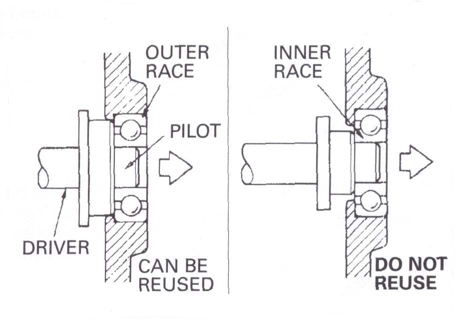
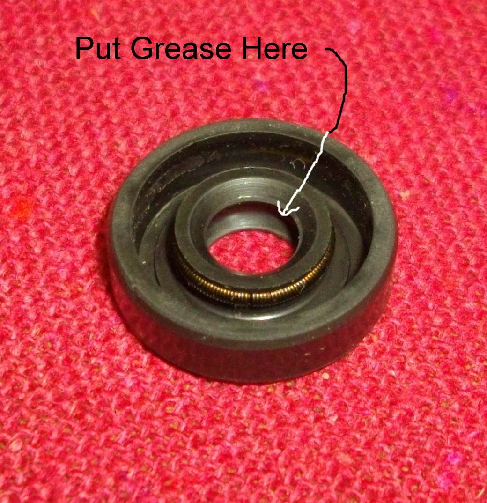

A ball bearing is delicate. Balls sit in a thin steel cage between two rings. A blow through the balls bends the cage and ruins the bearing. Seals fail if fitted backwards or dry.
Safety
- Wear eye protection. Hot parts burn.
- Use a driver that fits the race. Never hammer directly on a bearing or seal.
Bearings
- A bearing you will reuse must not be driven out through the balls. Support and push on the ring that is in the tight fit.
- A bearing going in a housing: push on the outer race. A bearing going on a shaft: push on the inner race.
- Fit the bearing with the maker's name and size numbers facing out, so you can read them from the side you fit it from.
- Heat the housing with a hot air gun and chill the bearing in the freezer. This helps it drop in: Use heat and cold.
- A bearing you are replacing anyway can be driven out any way. Use the correct driver on the new one.
Seals
- Fit seals with the lettering and markings facing out, away from what they seal.
- Pack the space between the lips with grease.
- Drive the seal in square, using a driver that sits on its outer edge. See Fit an oil seal.
Circlips
- Circlips have a rounded edge and a sharp edge from the way they are made. Fit them with the sharp edge facing away from the push of the load.
Check your work
- The bearing spins smoothly and quietly by hand and has no side play.
- The seal is flush and has no wrinkles.
If it did not fix the problem
- Bearing noise: Rumbling or growling from inside the engine.
- Wheel bearing: Replace a wheel bearing.